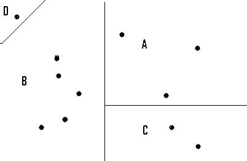

Una de las características distintivas del transporte como actividad económica es la de producir servicios distintos que, en gran medida, utilizan simultáneamente los mismos recursos. En la literatura teórica se suele denominar a estos casos como de “producción conjunta”, ya que es imposible analizar por separado la producción de distintos servicios que dependen del uso de una serie de recursos compartidos.
Una planta de crushing de porotos de soja es un caso de producción conjunta ya que en un mismo proceso productivo, y utilizando los mismos recursos, se producen bienes tan diferentes como aceite, glicerina, harinas proteicas, pellets y expellers de soja. En el caso del transporte sin embargo, esta caracterización es aún más relevante debido a los efectos de red que se dan cuando un determinado segmento vial es utilizado por dos servicios de transporte totalmente distintos entre sí. El proceso productivo da lugar continuamente a una multiplicidad de “productos” diferentes entre sí, que requieren sin embargo de la utilización simultánea de un mismo recurso que, además, es central para la producción de transporte.
Un camión de soja que va de Marcos Juárez al puerto de Rosario utiliza en parte la misma infraestructura que otro que opera de Villa María a Cañada de Gómez transportando maní, u otro de Mendoza a Nogoyá transportando vinos.
Valga la aclaración de que debemos definir un período de tiempo relevante para poder considerar que dos servicios utilizan “simultáneamente” un cierto tramo vial. Sin embargo, tanto si dichos servicios transitan un tramo de infraestructura vial en un mismo período (simultaneidad) como si lo hacen en períodos distintos (utilización sucesiva), existe complementariedad en el uso de la infraestructura vial, dado que el mantenimiento y amortización de ese recurso, es un costo compartido por ambos servicios.
En el caso del ferrocarril, además, pueden compartirse recursos de tracción ya que una locomotora puede llevar vagones con distintos orígenes, destinos y/o productos en un mismo tren.
El problema de la producción conjunta de servicios en el caso del transporte es por lo tanto bastante más complejo que el de la planta de crushing de porotos de soja. El análisis de costos de la generación de un viaje en camión del punto A al punto B prácticamente no puede disociarse del análisis de costos del conjunto de la red vial al estar afectando las funciones de costos de todos aquellos otros viajes que compartan en algún punto la misma infraestructura
En función de lo dicho en el apartado anterior, el transporte se organiza como un servicio de “red”. Una red es “un conjunto de puntos (o nodos) y líneas de interconexión que se organizan con el fin de permitir la transmisión de flujos (de mercancías, personas, información, etc.)” (Rus 2003).
Cada nodo de la red puede ser un origen o un destino. Un recorrido que conecta dos puntos determinados atraviesa otros nodos y puede ser caracterizado como una sucesión de “tramos” que conectan nodos adyacentes entre sí. No necesariamente entre dos nodos existe un recorrido único (de hecho es improbable) ya que cuanto más compleja sea una red, existirán más alternativas posibles para llegar de un punto a otro. Existen también nodos puramente conectivos que no generan tráfico (no son orígenes -producción- ni destinos -atracción) pero que facilitan la interconexión entre los nodos generadores.
Las redes pueden ser extremadamente complejas. La red vial Argentina completa conecta alrededor de 4.000 localidades
Además debemos contar los miles de puntos desde los que se origina transporte de cargas que no son localidades (cada tranquera de estancia, silo de acopio o parcela industrial es un nodo generador). Esto configura entonces una red extensa, jerárquicamente organizada, que provee soporte a múltiples y diversos servicios de transporte.
Para analizar una red se impone entonces la necesidad de desarrollar un modelo estilizado que represente el movimiento de los flujos y las interconexiones entre los principales nodos generadores de tráfico (representados como puntos conectados por líneas), y permita obtener una clara visión de conjunto de la configuración de la red y sus principales características, sin perderse en los detalles.
En primer lugar, debe dividirse el territorio en “zonas de tráfico” (ZT). De esta manera, en vez de tratar directamente con los orígenes y destinos puntuales (que como vimos tienden a existir en número inmanejable), trataremos con las zonas como mínima unidad de análisis capaz de producir o atraer tráfico. Así, cualquier punto productor de tráfico dentro de la zona A que tenga como destino un punto dentro de otra zona (B por ejemplo) sumará unidades de tráfico al par origen-destino A-B.
|
Figura 1: Zonificación de puntos de generación de tráfico  |
En este trabajo, los pares origen-destino intrazonales (que parten de un punto de A y se dirigen hacia otro punto de A) son sólo subsidiariamente considerados como tráfico, mientras que el foco de atención está puesto sobre los pares que conectan nodos de zonas distintas.
La pertinencia de esta simplificación por supuesto depende de la construcción de las zonas. El tamaño adecuado de una zona depende esencialmente de dos cosas:
Para un estudio como este, donde se intenta ofrece un panorama general sobre toda la red de transporte, idealmente una zona no tendría más de uno o dos centros poblados importantes, mientras que el resto de las localidades deberían ser claramente secundarias. Sin embargo, esto a veces puede no ser posible o conveniente debido a una geografía complicada, a cómo estén dispuestas las interconexiones entre los nodos o más frecuentemente por limitaciones de los datos disponibles que deben incluirse en el modelo.
En este caso, un modelo de red de tráficos construido en base a zonas demasiado grandes con más de uno o dos centros de población importantes dentro de ellas introduciría distorsiones al mostrar tráficos pasando entre nodos muy distantes a su verdadero punto de origen o de destino. Nuevamente la precisión requerida depende del propósito del análisis. Un estudio general que busque mostrar las grandes pinceladas del problema no es sustituto de un análisis más específico a la hora de observar situaciones concretas.
Para cada zona debe elegirse un centroide que es aquél que representa dónde está el grueso de la generación/recepción de tráfico. Si existe un solo centro poblado de importancia la elección de este es obvia; sin embargo la cuestión puede complicarse cuando debe elegirse un centroide representativo de dos o más centros poblados de importancia (o cuando los bienes a transportar se encuentran dispersos en el territorio, como sería el caso de los cultivos).
Esto puede llevar a distorsionar en mayor o menor medida la representación de los flujos de transporte que involucran a los nodos de esas zonas. Veremos algunos ejemplos de este problema más adelante.
Una vez delimitadas las zonas del territorio de análisis, deben establecerse tramos conectores entre estas a través de los cuales se representarán los flujos de tráfico. El criterio para decidir que dos zonas adyacentes estén conectadas o no, responde al objetivo principal de modelizar una red de transporte que es ofrecer una visión de conjunto que capte las relaciones más significativas y haga abstracción de aquello que es menos relevante.
De manera que dos zonas adyacentes se consideran conectadas por un tramo si existen recorridos relevantes que conecten los centros poblados que conforman las zonas. En el caso extremo de dos zonas entre las cuales sólo existan unos pocos recorridos no pavimentados y en mal estado, con un volumen de tráfico insignificante, estas zonas no se consideran conectadas. Por supuesto hay casos más grises que pueden generar discusión. Es importante destacar que esta metodología ya implica una teoría acerca de cómo se deciden los viajes (y por lo tanto de qué interconexiones deben descartarse a priori, en las primeras etapas de modelación de la red).
El tramo se visualiza como una conexión lineal entre los centroides de dos zonas adyacentes. Generalmente, y si las zonas están bien construidas, el recorrido más relevante coincide con aquél que conecta los centroides y por lo tanto se ajusta bastante bien al tramo. Esto sin embargo no ocurre en muchas ocasiones por los mismos motivos que afectan a la delimitación de las zonas. Debe señalarse que la elección de un recorrido entre los centroides ya implica una fuerte presunción teórica (se asume que los tráficos más relevantes entre dos zonas pasan por el recorrido elegido) que a veces puede alejarse bastante de la situación real.
Una incorrecta zonificación podría entonces llevar a que se sobreestime la densidad de tráfico de un tramo de la red mientras se ignora la relevancia de otros. La existencia de recorridos alternativos al elegido que sean relevantes para el tráfico entre dos zonas también puede llevar a errores de estimación importantes de los tráficos de un tramo.
Consideremos por un momento el problema en un contexto urbano. Los puntos desde los que parten transportes de pasajeros están mucho más dispersos que en el caso del transporte interurbano. En ciudades de fuerte densidad poblacional, casi se podría hablar de un continuo de puntos de generación de tráfico. Las zonas en este caso serán mucho más pequeñas y dependerán fuertemente del objetivo del análisis (si se busca analizar los desplazamientos de usuarios del subte, la zona más grande aceptable podría ser del tamaño de una o dos cuadras). Por otro lado, el número de posibles recorridos entre una zona y otra es mucho mayor. La posibilidad de no contabilizar tráfico relevante por no elegir bien los puntos de conteo de los flujos es muy grande, al crecer el número de itinerarios razonables alternativos. El caso urbano exige una precisión mucho mayor para no perder fiabilidad en el análisis.
En algunos casos no existe un recorrido directo entre dos zonas o, si existe, no se puede diferenciar inequívocamente el tráfico pasante que corresponde a determinado tramo o a otro. En estos casos deben crearse nodos “conectivos” para crear tramos que coincidan más precisamente con los recorridos reales. Estos no producen ni atraen tráfico en el modelo (no pueden formar parte de pares origen-destino) sino que únicamente dan lugar a tramos dentro del recorrido de un par OD que se ajustan mejor a la situación geográfica de los recorridos reales.
Al construir los tramos de una red se busca entonces hacerlos coincidir aproximadamente con los recorridos reales más relevantes (en términos del tráfico que soportan). Sin embargo, generalmente hay más de un recorrido posible relevante que une dos nodos en la red vial real. Existen caminos locales, rutas secundarias, provinciales y nacionales. El transportista que quiere desplazarse del nodo A al nodo B (conectados por un “tramo” del modelo de red) elige en la práctica un recorrido basado en criterios que el investigador no conoce a priori y que pueden ser difíciles de modelar.
Entre estos criterios pueden estar la distancia total, la disponibilidad de estaciones de servicio, la dificultad o estado de mantenimiento del terreno, el costo de peajes y varios más. Idealmente, la identificación del recorrido real que une los dos nodos debería surgir de un modelo de costos que contemple todos estos criterios y elija el recorrido de costo mínimo.
La construcción de tal modelo de costos para la identificación de recorridos implica añadir sustancialmente complejidad al estudio y requiere investigación de campo para identificar y mensurar los criterios de selección de recorridos de los transportistas.
Para el propósito de este estudio, que es brindar un panorama general de los flujos de transporte, esto no resulta práctico. Se adoptó el criterio de elegir la recorrido de distancia mínima entre dos nodos como representación de cada tramo, lo que equivale a minimizar un modelo de costos en el que se incluya un solo parámetro (la distancia). Así, cuando se utilicen las “distancias” de los tramos en el modelo de red, estas se referirán a la distancia del recorrido real más corto posible entre los dos nodos conectados por cada tramo.
Esta misma observación vale para la elección de recorridos para los pares origen-destino (recorridos que ya excedan un solo tramo, utilizando una sucesión de ellos para conectar nodos que no son adyacentes). La elección de un recorrido entre dos nodos muy alejados entre sí (en términos del modelo de red, nodos que representan zonas de tráfico que no son contiguas) dependerá en la realidad de varios factores además de la distancia total. Cuando no se cuenta con mayor información sobre los recorridos utilizados y no es posible minimizar una función de costos que incluye varios criterios, lo usual es elegir el recorrido que minimice la distancia total.
El modelo de la red vial propuesto en este estudio divide al territorio nacional en 101 zonas compuestas por grupos de departamentos (o partidos, en el caso de la provincia de Buenos Aires) (Ver
La elección de cada nodo como centroide de su zona busca representar visualmente el “centro de gravedad” de la generación de tráficos del conjunto de departamentos o partidos ya que, como dijimos anteriormente, la mayor parte de los puntos de producción o atracción de tráficos están próximos al mismo.
Por ejemplo la zona número 22 del modelo es la ciudad de San Nicolás en la provincia de Buenos Aires. San Nicolás es el centroide de una zona compuesta por los partidos de San Nicolás y Ramallo (ambos de la provincia de Buenos Aires) con una población de 133.602 habitantes
Figura 2: Zona de tráfico y su nodo centroide
Así, la matriz de orígenes y destinos registra a todos aquellos tráficos generados o recibidos en los departamentos de San Nicolás o Ramallo como pertenecientes a la ciudad de San Nicolás.
Como generalmente no se dispone de información detallada acerca de los puntos de origen y destino de las cargas transportadas en una red, la delimitación de las zonas tiende a tener un criterio más bien pragmático basado en la disponibilidad de datos (principalmente en su nivel de desagregación geográfica). En el caso de disponer de una encuesta o censo de tráficos, se cuenta con información sobre puntos específicos de origen y destino; la delimitación de las zonas podría responder, en parte, a criterios de confiabilidad en el tratamiento estadístico basados en los resultados o las características de la encuesta.
En este caso, gran parte de la información relevada para realizar este estudio se encuentra a nivel de departamento o partido (disponiendo raras veces de una desagregación mayor –por ejemplo a nivel de localidad- y debiendo lidiar otras veces con niveles de desagregación aún menores –provincial) de manera que las zonas están construidas como grupos de departamentos y nunca abarcan fracciones de estos (si bien sí hay zonas cuya superficie se extiende sobre más de una provincia).
Teniendo delimitadas las zonas y asignado un centroide a cada una de ellas, deben crearse tramos que conecten pares de nodos de zonas adyacentes a los cuales se asignará el tráfico que haya entre las mismas. Nuevamente los tramos buscan representar simplificadamente los sectores más relevantes de la red vial real de la Argentina, en términos del tráfico que soportan. Esto incluye a la casi totalidad de las rutas nacionales y a algunas rutas provinciales.
La distancia asignada a cada tramo corresponde a la del recorrido más corto entre los nodos. En este caso fue tomada realizando consultas a la aplicación web de Google Maps, ocasionalmente corregidas cuando algún recorrido importante estaba ausente en la aplicación. La dispersión es bastante alta, siendo el tramo más corto de 22 km (San Antonio de Areco a San Andrés de Giles) y el más largo de 590 km (Neuquén a Ingeniero Jacobacci); la media es de unos 154 km.
Cómo dijimos, en algunos casos es necesario crear tramos adicionales para aproximarse mejor a la realidad geográfica de los recorridos que conectan dos nodos generadores. Para estos casos se han creado 20 nodos “conectivos” (en verde en el mapa y de código mayor a 1000).
Figura 3: Tramos conectores de zonas de tráfico
Por ejemplo el tramo entre San Nicolás y Pergamino (zonas 22 y 24 de nuestro modelo) se corresponde con la recorrido nacional 188 y representa el tráfico existente entre los departamentos de Colón, Rojas y Pergamino (zona de Pergamino), y los de San Nicolás y Ramallo (zona de San Nicolás).
Un transporte de cargas que se origine en Villa Ramallo y tenga como destino la ciudad de Colón (marcados en rojo – ver mapa) figuraría en la red como carga pasante por el tramo 22-24 (San Nicolás-Pergamino).
Las 101 zonas generadoras del modelo más los 20 nodos conectivos se conectan entre sí a través de 214 tramos (Ver
Por ejemplo en el camino de Trenque Lauquen a General Villegas el tráfico pasa por la ruta nacional 33 pero a partir de Rivadavia también hay tráfico proveniente de General Pico que va hacia Gral. Villegas. Si esta situación no se tuviera en cuenta y en lugar del nodo conectivo en Rivadavia se creara un tramo directamente entre Villegas y General Pico, sería más complicado asignar correctamente el tráfico a cada tramo ya que habría una superposición entre Rivadavia y Villegas.
Figura 4: Nodos conectivos
Por supuesto un tramo no necesariamente coincide con una sola ruta ya que representa la conexión entre dos superficies (las zonas) y no sólo entre dos puntos (los nodos centroides). Alrededor de 20 tramos en el modelo representan el tráfico de más de una ruta.
Un caso evidente (y casi trivial) de tramo con más de una ruta asociada es Rosario-Cañada de Gómez donde se debe contar la traza vieja de la ruta 9 y la traza nueva de la autopista (en este caso sin embargo ambas conectan las mismas localidades ya que corren en paralelo).
Figura 5: Tramos con múltiples rutas asociadas
Un caso mucho más complejo de tratar es el que comprende zonas de gran porte, con multiplicidad de rutas relevantes que las conectan. Lo ejemplificamos con las zonas de tráfico de Laboulaye, Villa María y Bell Ville.
Cualquier punto de origen en la ZT
Sin embargo en este caso quedarían también atrapados todos los tráficos del departamento de Juarez Celman (a donde pertenece la localidad de La Carlota) a pesar de que resulta evidente que cualquier tráfico que se origine en este departamento con destino a alguna localidad del sur de los departamentos de Unión y Marcos Juárez (pertenecientes a la zona de Bell Ville) se desplazarían por la ruta nacional 8 que corresponde al tramo de La Carlota-Canals.
Figura 6: Zonas de tráfico con problemas de delimitación
De igual manera cualquier tráfico que se origine en el sur de la zona con destino a la ZT Villa María aparece en el modelo transitando el corto tramo entre Bell Ville y Villa María por la ruta nacional 9 cuando en realidad debería seguir los tramos que conectan a Canals, La Carlota, Río Cuarto y finalmente Villa María.
Estos errores se deben principalmente a que la zona de Bell Ville está compuesta por dos departamentos de excesiva extensión norte-sur dentro de los que se incluyen dos rutas nacionales importantes muy separadas entre sí. Idealmente el sur de la ZT Bell Ville debería ser una zona distinta pero, al no contar con información más que a nivel de departamento, no puede crearse una zona con fracciones de Unión y Marcos Juárez.
Por su parte, el departamento de Juarez Celman probablemente debería ser una zona en sí mismo, pero esto no se justifica ya que no hay ningún nodo importante que pueda actuar de centroide. Toda generación de tráfico en el departamento debe estar muy dispersa y además no es demasiado relevante. La construcción de una ZT en esa situación añadiría complejidad al modelo y crearía más problemas de los que resolvería.
La solución ad-hoc que se adoptó para este caso infrecuente dentro del modelo fue asignar algún tráfico de las ZT Villa María, Bell Ville y Laboulaye a los nodos conectivos de La Carlota y Canals en forma excepcional. Este caso es seguramente el ejemplo más extremo de las distorsiones a las que está expuesto el modelo de zonificación adoptado.
A continuación se muestra el mapa de la red vial modelada.
Figura 7: Red vial
Los 101 nodos generadores, más los 20 nodos conectivos y los 214 tramos que conectan entre sí a los 121 nodos configuran el modelo de la red vial argentina. Idealmente, si se dispusiera de una encuesta de cargas completa y actualizada, cada par origen-destino de la encuesta se asociaría a sus correspondientes zonas de tráfico en el modelo y el recorrido seleccionado debería ser uno que pase por el punto donde se realizó la encuesta.
Sin embargo la mayor parte de la información con que se cuenta para este estudio no ofrece datos acerca del recorrido de las cargas, de manera que este debió ser construido teóricamente para cada par origen-destino posible.
Para esto se construyó el grafo (conjunto de vértices o nodos unidos por líneas) del modelo y se corrió un algoritmo de caminos mínimos para todos los pares origen-destino posibles (101 x 101 pares). Como el criterio se basó exclusivamente en la distancia mínima y sin importar el sentido de la carga, el número de recorridos posibles relevantes es de:
Por supuesto la mayoría de los 5.050 recorridos son escasamente relevantes dado que vinculan pares OD que no tienen tráfico en la matriz origen-destino. Sólo 2.457 de estos pares OD posibles registran algún tráfico en la misma.
En algunos casos, utilizar la distancia mínima como criterio para construir el recorrido de un par OD no es muy adecuado debido a que existen otras consideraciones adicionales a las que se enfrenta el operador de cargas (autopistas, peajes, estado de la ruta, paradores, servicios auxiliares, pendiente, dificultad, etc.) que pueden a veces pesar más que la distancia como criterio decisivo para elegir un recorrido. Un total de 34 recorridos fueron revisados manualmente reemplazando a los originados por el algoritmo, en función de características propias de los recorridos. Sin embargo debemos esperar que el modelo tenga algún sesgo que genera una distancia media del sistema menor a la real.
En este modelo, un par origen-destino siempre utiliza el mismo recorrido independientemente del tipo de carga que se transporte o de que se invierta el sentido de circulación de la carga.